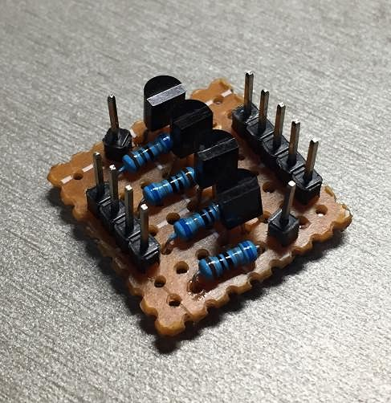
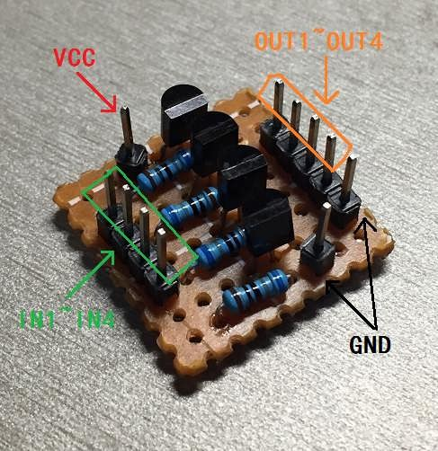
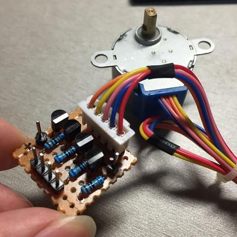
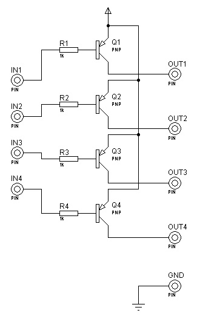
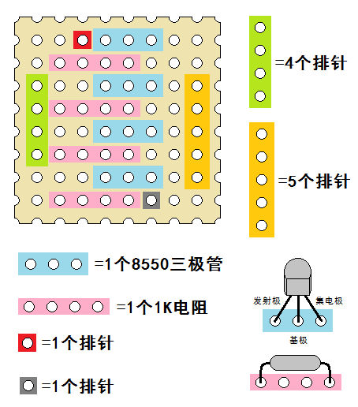

上篇博客《单片机准三态IO口驱动三极管的思考——从共GND到共VCC》中已经讲到了准三态IO口驱动NPN三极管继而驱动用电器的弊端，（当然，支持推挽输出的单片机没有这个问题）。并且文中也分析了可以使用PNP开关电路来取代之。最后还指出常用的5线4相步进电机其实可以使用“共阴”接法。
今天我花了一个下午在机房设计了一个很精巧的步进电机驱动电路，并用万能PCB板做了出来。这样方便以后使用时不需要再费心思设计PCB了。电路实物图如图：

标上引脚示意：

红色箭头指向的是VCC，这个电源是供给给步进电机的，建议单独供电。黑色箭头指向的是GND，图中有两个GND，一个是流回电源的，一个是给步进电机的，其实两个是连在一起的。图中左侧绿色框内的四个引脚，从上到下依次是IN1、IN2、IN3和IN4，分别对应右边橙色框中从上到下的四个引脚的OUT1、OUT2、OUT3和OUT4。当INx(x=1,2,3,4)输入高电平或悬空时，OUTx悬空；当INx输入低电平（且吸电流能力较大）时，OUTx导通（与VCC相连）。
与步进电机的连接如图：

本来，红线应该接VCC，其余四根线通过NPN开关电路连到GND。而现在，红线连接GND，其余四根线通过PNP开关电路连接到VCC。
在代码上需要相应地做些调整，因为现在，输入1时断路，输入0时接通。
电路的原理图如下：

在万能PCB板上各个元件的分布如下：

之后在PCB板背面连线：

这个估计是最简电路了，目前想不到更加简单的了。毕竟是软件出身，对硬件设计不是很懂，这个也是绞尽脑汁想出来的了，故在此一记，方便以后使用。